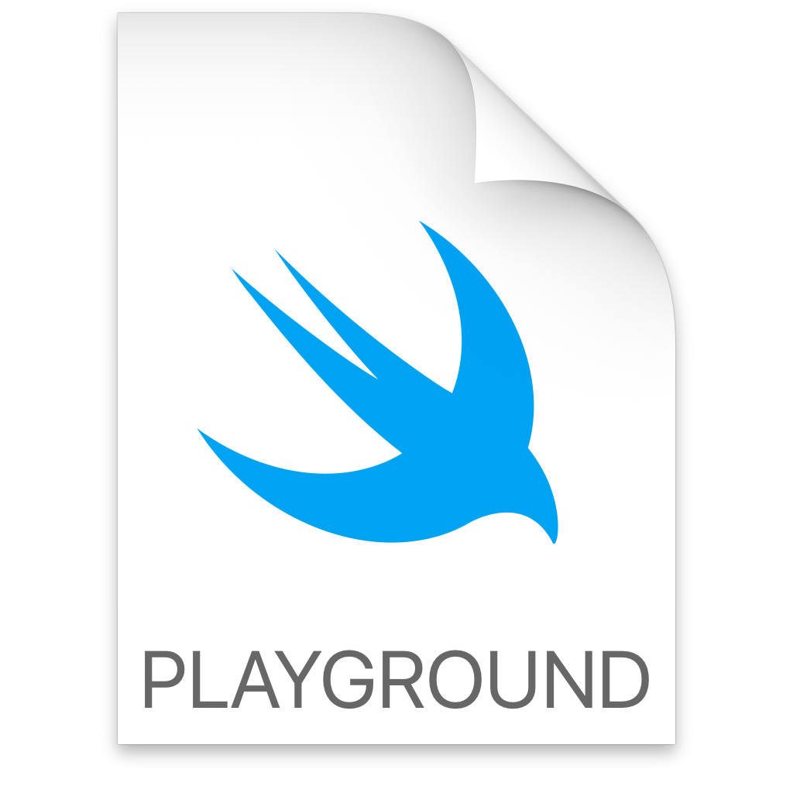
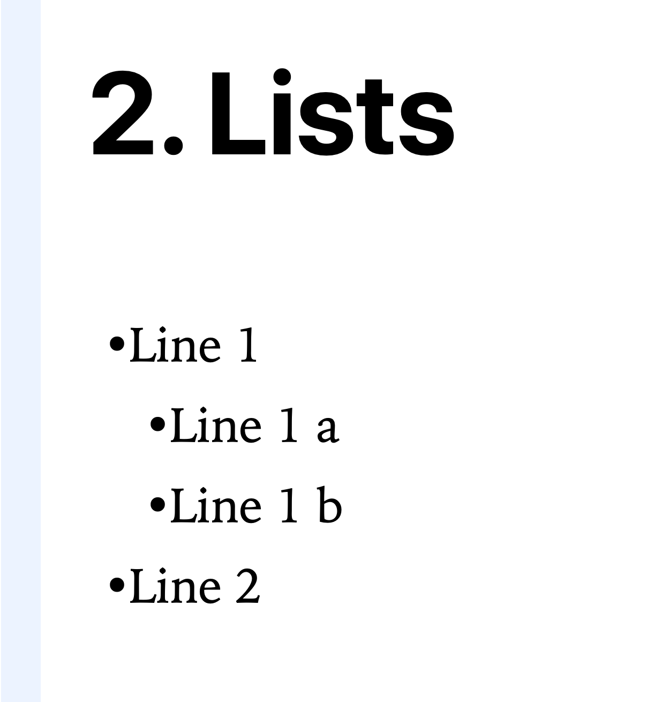
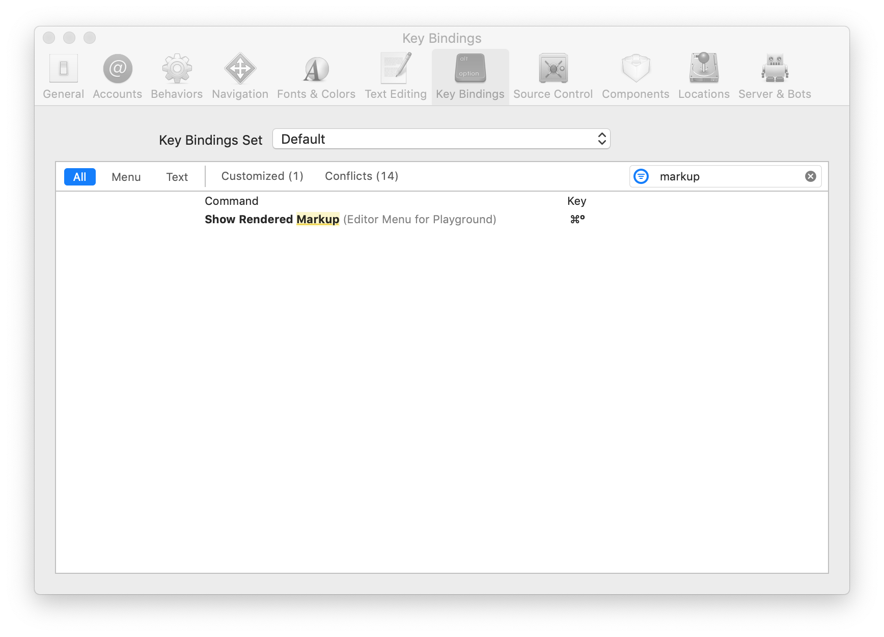
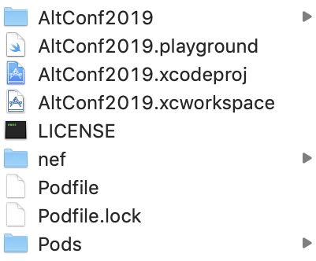
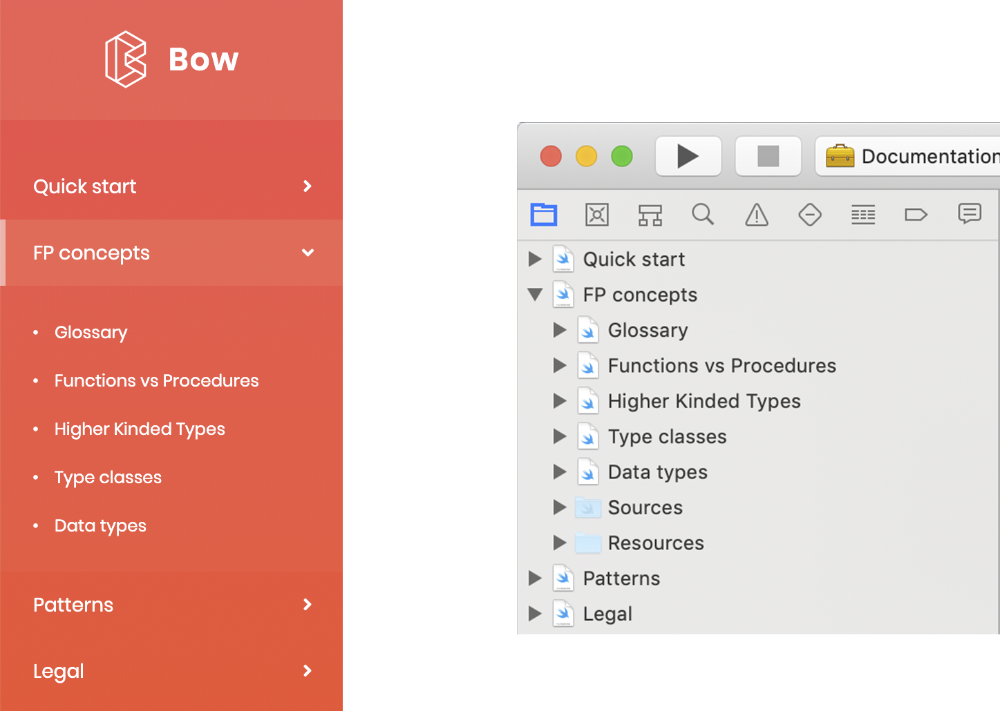

## Markdown ⦾ Quick review
### 1. Headers
```Markdown
# This is an <h1> tag
## This is an <h2> tag
### This is an <h3> tag
```
### 2. Lists
```Markdown
* Line 1
* Line 1 a
* Line 1 b
* Line 2
```
### 3. Quotes
```Markdown
> This is a quote example where we put emphasis in this
`element`
```
### 4. Emphasis
```Markdown
*This text will be italic*
_This will also be italic_
**This text will be bold**
__This will also be bold__
_You **can** combine them_
```
### 5. Links
```Markdown
https://github.com/bow-swift/nef
[GitHub](https://github.com/bow-swift/nef)
```

### Markup for playgrounds
```Markdown
/*:
line of text with optional markup
…
line of text with optional markup
*/
```
```Markdown
//: This is a single comment
```





#### How to change between render documents modes?

```swift
import Bow
let either = Either<Error, String>.right("Either")
either.fold( { _ in "Default" },
{ input in "Great \(input)!" } )
// Great Either!
```
```Swift
//: > __Bow__ provides us functional programming in Swift
import Bow
/*:
### Either
Sum type of types `A` and `B`. Represents a value of either
one of those types, but not both at the same time. Values
of type `A` are called *left*; values of type `B` are
called *right*.
*/
let either = Either<Error, String>.right("Either")
either.fold( { _ in "Default" },
{ input in "Great \(input)!" } )
// Great Either!
```

## What is __nef__?
"A set of command line tools that lets you have compile time
verification of your documentation written as Xcode Playground"
### How to install?

## What can I do with **nef**?
**Eases** the creation of Xcode Playgrounds with support for third party libraries.
**Compiles** Xcode Playgrounds with support for third party libraries from the command line.
**Generates** Markdown project from Xcode Playground.
**Integrates** Xcode Playgrounds with Jekyll to create a microsite.
### **Eases** the creation of Xcode Playgrounds
```bash
⟶ nef playground --name AltConf2019 --podfile bow-podfile
```
### Podfile
```Markdown
target 'AltConf2019' do
platform :ios, 12.0
use_frameworks!
pod "Bow", "~> 0.4.0"
end
```
```bash
Installing Playground (AltConf2019)... ✅
Set AltConf2019 target to iOS ✅
Updating podfile (bow-podfile)... ✅
Installing Pods ... ✅
```
### Xcode Playground project

## **Compiles** Xcode Playgrounds with support for third party libraries
```bash
⟶ nef compile .
```
```bash
Installing Pods ... ✅
Building AltConf2019.xcworkspace (AltConf2019) ... ✅
Copy frameworks ✅
Found 2 playgrounds
Compiling Markup Formatting Reference.xcplaygroundpage ... ✅
Compiling Example.xcplaygroundpage ... ✅
```
## Markdown support

```bash
⟶ nef markdown --project . --output ~/Desktop
```

## Jekyll Integration
Transform your plain text into static websites and blogs

```bash
⟶ nef jekyll --project AltConf2019 --output site
```
## **nef** commands
__nef__ provides some commands to modify the Markdown transformation process.
```swift
// nef:begin:header
/*
<Jekyll's header>
*/
// nef:end
```
```swift
// nef:begin:hidden
import UIKit // This will be hidden in the Markdown file
// nef:end
```
#### Case of success

# Demo
## Closing the circle: CI & CD
## Outline
1. Mardown: quick review
2. What is __nef__?
3. What can I do with **nef**?
4. Markdown support
5. Jekyll Integration
6. Closing the circle: `CI` & `CD`
# bow-swift/nef
## One more thing...
## How __nef__ works?
### Parser
Creates a valid AST from Xcode Playground's page
1. __Lexical analyzer__ the nef's tokenizer (scanner)
2. __Syntax analyzer__ build the AST
### Render
1. __Markdown__
2. __Jekyll__
3. ...